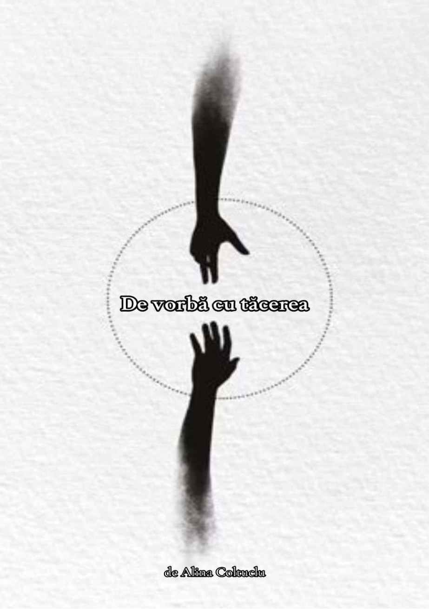
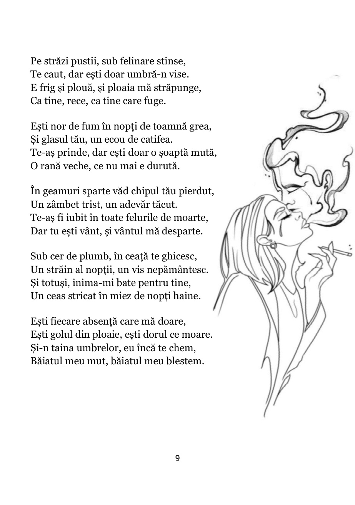
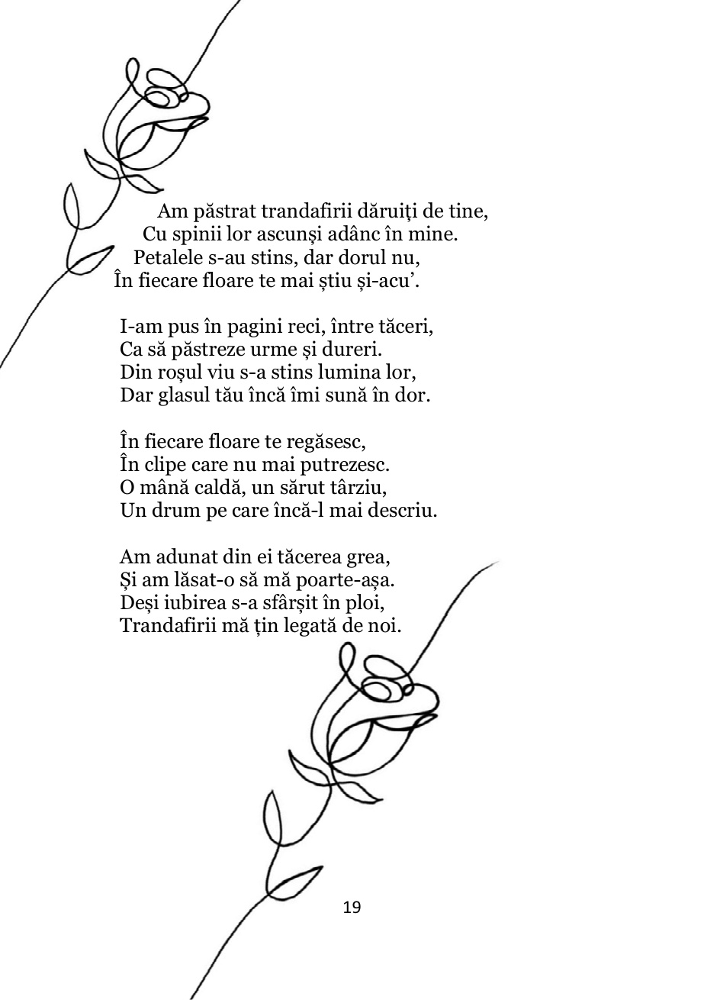
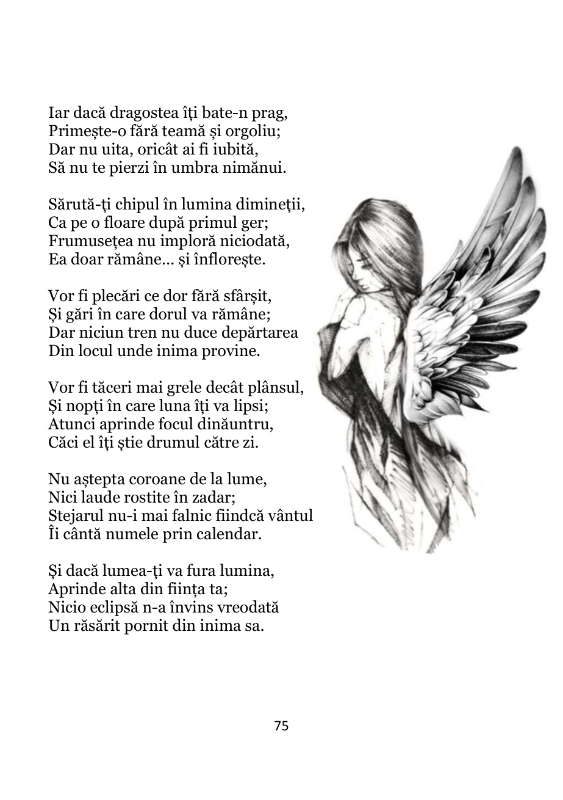

UN VOLUM DE POEZIE · 2026
De vorbă
cu tăcerea
Uneori, cele mai sincere conversații
au loc în liniște.

„Dacă citești aceste rânduri, citești din mine —
și poate, din tine.”
01 / DESPRE VOLUM
O fereastră către
ceea ce simțim.
Există povești pe care nu le-am spus niciodată cu voce tare. Amintiri pe care le-am ascuns în colțuri de suflet, oameni pe care i-am pierdut fără să încetăm să-i purtăm cu noi și sentimente cărora nu le-am găsit niciodată un nume.
Din toate acestea s-a născut „De vorbă cu tăcerea”.
Nu am început să scriu pentru a deveni autoare. Am început să scriu pentru că, uneori, sufletul avea mai multe de spus decât putea duce. Pentru că erau zile în care cuvintele rămâneau nerostite, iar tăcerea devenea singurul loc în care puteam să mă aud.
În paginile acestei cărți se întâlnesc copilul care încă își caută drumul spre casa părintească, dorul de oamenii care au devenit amintire, iubirea care ne poate înălța și, uneori, destrăma, dar și omul care învață să se adune din propriile bucăți.
Sunt versuri în care se ascunde o copilărie, altele în care încă mai doare o despărțire. Sunt pagini scrise din dor, din teamă, din speranță și din acele începuturi care apar abia după ce ai crezut că totul s-a sfârșit.
Fiecare vers a fost mai întâi o rană, apoi un leac.
Poate că, citind, nu vei afla întotdeauna cine sunt eu. Dar s-ar putea să descoperi părți din tine pe care le-ai ținut prea multă vreme în tăcere.
Pentru că această carte nu este doar despre ceea ce am trăit eu. Este și despre tot ceea ce, într-o formă sau alta, ne apropie unii de ceilalți.
Iar dacă, la final, vei închide cartea și vei rămâne câteva clipe în liniște, poate că dialogul nostru abia atunci va începe.
Fiecare vers a fost mai întâi o rană,
apoi un leac.
DIN „ÎNAINTE DE TOATE”
02 / CÂTEVA PAGINI
Unele cuvinte
rămân cu tine.
Nu sunt doar pagini dintr-o carte. Sunt bucăți de suflet, așezate în versuri, pentru cei care au simțit cândva la fel.



Trei fragmente dintr-o poveste mult mai mare. Reproduse din volumul original. © 2026 Alina Coltuclu.
O ULTIMĂ GÂNDIRE
Cartea se încheie.
Dialogul continuă.
Poate că, între paginile ei, vei găsi un gând pe care nu ai știut cum să-l rostești.
Exemplar standard 45 lei
Exemplar însoțit de un gând personal 50 lei
Livrare în România și în străinătate prin Poșta Română. Costul transportului se comunică în funcție de destinație.